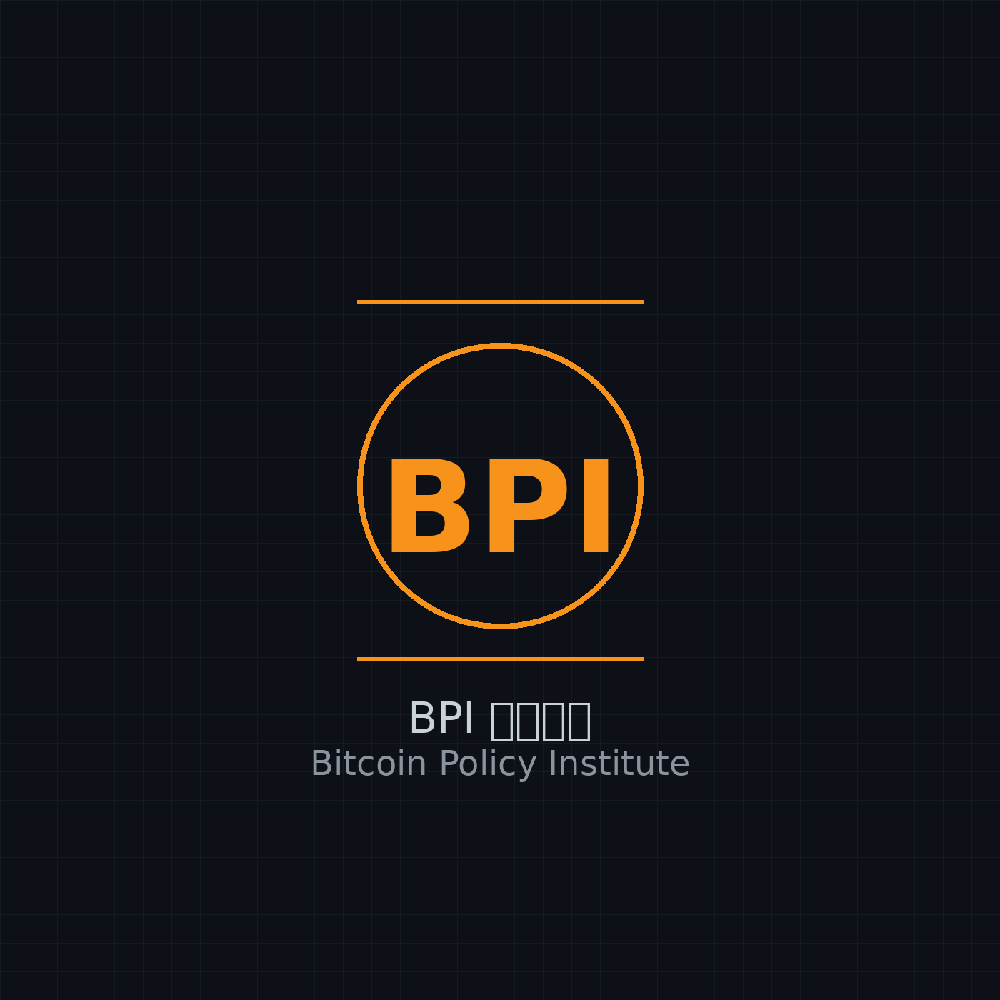

Business Process Intelligence（过程挖掘）课程 — RWTH Aachen, Prof. Wil van der Aalst。把事件日志变成洞察，从数据中发现真实流程。
侦探破案比喻贯穿全篇。从事件日志出发，学两种"还原手法"：DFG 快速草图（朴素但分不清并发/循环），到 Petri 网正式重建（库所/变迁/令牌/弧，靠结构区分语义）。金字塔审问：有界性→安全性→无死锁→活性，压轴反常识——活性不单调，多给令牌可能反而坏事。
一致性检查：模型 vs 日志。四个维度(拟合/精确/泛化/简洁)与帕累托取舍——没有全能冠军，只有取舍。因果足迹：直接后继 x>y 的朴素力量。令牌回放：p/c/m/r 四个计数器、不变量 p+m≥c≥m、完美回放 vs 失败回放完整 walkthrough。静默变迁与局部决策陷阱→对齐预告。医学体检类比贯穿全篇。Gemini审阅：6/6概念全过，称 Pareto 取舍用灵敏度vs特异性解释为"神来之笔"。
开课以来第一次，我们不学新算法——我们翻开地基看。事件日志从哪来？五层元模型(流程→案例→活动→实例→事件)、事务生命周期、XES标准。点图=震波勘探(钻前看纹理)。三种从数据库抽事件的方式。核心认知翻转：案例(notion)不是数据字段，是建模选择。后半场揭示对象中心(OCEL)的现实——展平三病态(收敛/发散/缺陷)。OCPM多视图解法。G4L打井规范→GIGO：算法再强，垃圾进垃圾出。类比地质勘探。Gemini审阅：6/6概念全通过4层启发式教学深度审计。
案例中心发现最后一讲。瑞士军刀比喻：过程树+四把刀(→切片/×分叉/∧并行/↺回旋镖)+τ万金油。构造健全性——数学归纳法证明，每切一刀自带安全证书。归纳切割：DFG找自然裂缝，断开=选择、单向=序列、双向全通=并行、旁路回拽=循环。花朵模型兜底，宁松勿漏。ProM+Celonis工业落地。四种发现范式句号。Gemini GO_AFTER_FIX。
卫星制图类比贯穿全篇：迁移系统=原始影像，状态抽象=分辨率，区域=同色色块，Petri网=矢量化地图。Phase 1用序列/集合/多重集/n-tail拍摄状态全景，Phase 2找all-enter/all-exit/all-skip一致的极小区域变库所。十个并行活动的重发现实验。模拟vs互模拟的鸿沟，标签拆分恢复等价。"Just Cheese Please!"三明治实战。四种力收束：追求结构保真，但怕噪声、牺牲泛化。Gemini PASS/GO零修改。
考古学比喻贯穿全篇：Alpha一碰噪声就碎，启发式挖掘靠频率统计。Phase 1从直接跟随次数算出依赖度——[-1,1]的单向程度公式，双阈值（频率+依赖）过滤后才画弧。Phase 2滑动窗口法在同一trace上扫描"几厘米范围内"的邻居，数出C-net绑定。披萨实战验证："三料齐全才吃(2³=8)"纯靠频率还原。Gemini PASS/GO零修改。
翻译与语言比喻贯穿全篇。四种质量标准 = 信达雅——Fitness检查原文是否覆盖、Precision防止添油加醋、Generalization确保换语境也成立、Simplicity追求简洁。贯穿全集的表达偏差：建模语言决定了你能发现什么。BPMN（英语）的OR-join恶性循环、Dependency Graph（句法树）的极简因果结构、C-net（依存语法）的声明式绑定——三门语言一条主线。Gemini审阅PASS/GO零修改。
Alpha 编译器的 bug 报告单。五站递进：隐式库所（死代码）→ 短环（b>b 迫使 Alpha 判 b‖b——"和自己并行"的语义崩溃）→ 非局部依赖/非自由选择（窥孔优化的半径只有1）→ 表示偏差（ISA 的边界）→ 信息论极限（两份不同日志发现同一个模型）。收束：Alpha 的"正确性保证"与"局限清单"是同一张纸的两面。
DFG 是源码注释，Petri 网是机器码，Alpha 是把前者翻译成后者的编译器。深入四种顺序关系（直接跟随→因果→并行→选择），靠"方向对称性"一个维度劈开 DFG 的哑巴箭头，再走完足迹矩阵和八步算法全流程。集末点出 Alpha 的边界——短环、非自由选择、隐藏活动，为 EP06 铺路。
没有标签也能学习——关联规则（Support/Confidence/Lift铁三角）发现共现模式，k-means聚类自动分组，交叉验证评估泛化。啤酒尿布传说、餐厅5000桌贯穿全篇。
从流程挖掘的事件日志到机器学习的决策树。情境表（Situation Table）是桥梁，熵和信息增益是引擎，保险理赔预测是贯穿全集的中心类比。覆盖监督学习、分类vs回归、决策树算法、过拟合vs欠拟合。
什么是过程挖掘？从一条草坪上的渴望路径讲起，理解事件数据的结构、三种基本玩法（发现、合规检查、增强），以及 Celonis/ProM/RapidMiner 工具生态。